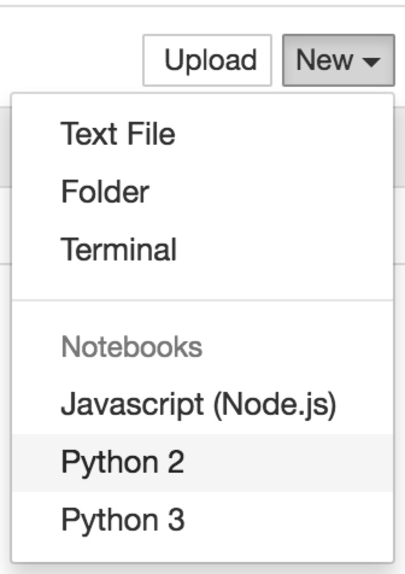
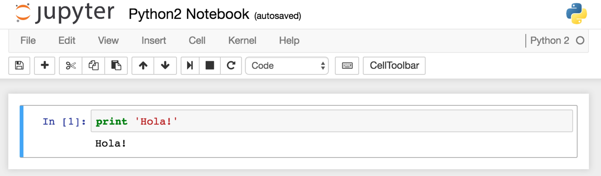
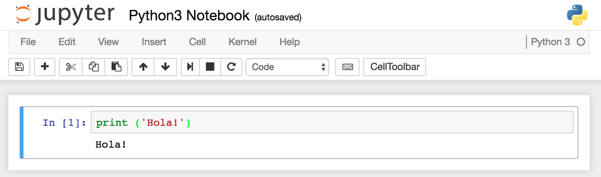
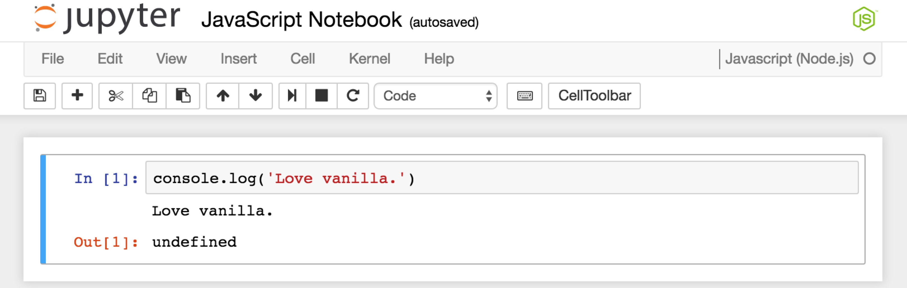

Setting Up Jupyter Notebook with JavaScript, Python2 and Python3 Support
Jupyter Notebook is an awesome web application that allows you to edit, run and share Python and Javascript in browsers. This post details the steps to install and configure Jupyter Notebook to support JavaScript, Python2 and Python3 at the same time.
Step1: Install Python
|
|
After that, you should have python2, python3, pip2 and pip3 installed.
Step2: Install IPython and Notebook
|
|
After this step, you should have ipython2 and ipython3 in hand, type which ipython2 and which ipython3 to check that.
IPython is an enhanced interactive shell, and it’s highly recommended to use it instead of the classic python interpreter.
Step3: Add the Python Kernels
|
|
The kernel configuration files will be located at /usr/local/share/jupyter/kernels.
Step4: Add the JavaScript Kernel
Prerequisite: Make sure you have Node.js properly installed.
IJavaScript is an npm package that implements a Javascript kernel for the Jupyter notebook. Run the following command to install it:
|
|
You need to run ijs once to let IJavascript add the js kernel to the Jupyter notebook.
Now, we have all the needed kernels installed.
A Validation
In the right directory you want your notebooks in, run:
|
|
Visit: http://localhost:8888/tree, click the New drop-down button on the right side, and you’ll see the kernels:

You can play around with these kernels:



Conclusion
This post shows the steps to install and configure the Jupyter Notebook to support Python2&3 and JavaScript at the same time. Jupyter Notebook supports Markdown, and you can write comments and docs with it. For advanced users, you can add your own magic command to speed up your development and testing. Have fun!